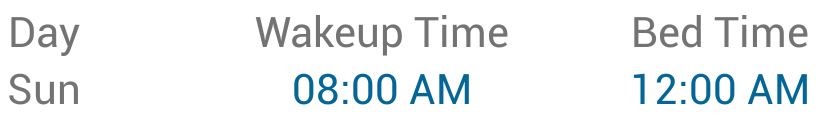
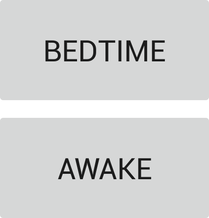
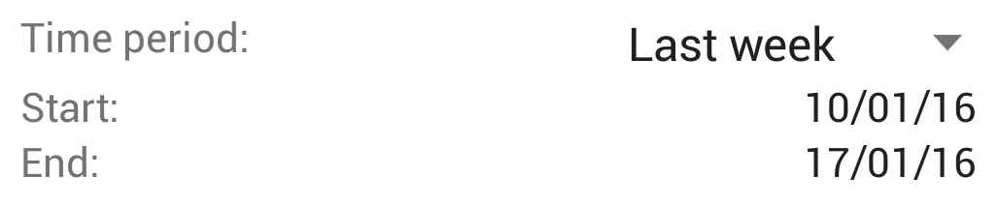

| Targets are when you are trying to wake up or go to bed. |  |
| Press targets to set your targets. | |
| Default targets apply to each day of the week. | |
| Custom targets apply special wakeup or bedtimes targets to specific dates. These supercede the default targets. | |
| The abbreviation n.d. means on the next day |
| Press bedtime when you go to bed, and press awake when you wake up. |  |
| You can only go to bed or wake up once per day. | |
| Pressing awake or bedtime again will update the current day's records. | |
| You can add wakeup and bedtimes for other days by pressing records. |
| Press sleep report to make a report. | |
| Choose the report period. |  |
| Your sleep report shows your daily sleep average, and how well you're sticking to your targets. | |
| Press export to CSV to export your sleep target and record data to a file. |